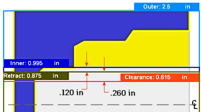

| Внешнее смещение
|
Используйте это смещение, чтобы сдвинуть положение относительно опорной точки, выбранной выше. При необходимости можно выполнить положительную или отрицательную корректировку.
 |
В данном примере:
Наружный = наружный диаметр заготовки (модель + 1 мм припуск).
Отвод = Наружный + 5 мм смещение.
Зазор = отвод + 5 мм смещение.
|
|  |
В данном примере:
Внутренний = внутренний диаметр заготовки.
Отвод = внутреннее смещение 0,12 дюйма.
Зазор = отвод, смещение 0,26 дюйма.
|